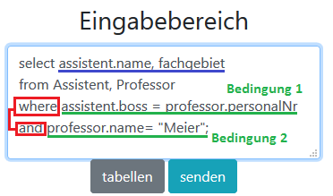

SQL-Tool

Hilfe
Mit dieser Anwendung können SQL-Abfragen auf eine bestehende Datenbank getestet werden. Soweit möglich findet dabei eine Syntaxüberprüfung statt und gibt genauere Auskunft über mögliche Fehler. Eine Datenbank speichert Daten, auf die wir zugreifen wollen.. im Normalfall sieht der Inhalt wie eine Exceltabelle, nämlich tabellarisch, aus. Unsere Datenbank besteht aus mehrere Tabellen(z.b. Assistent oder Vorlesung) und jeder dieser Tabellen hat nochmal einige Attribute(z.b. name, fachgebiet), die die Tabellen genauer beschreiben. Jede Tabelle hat dann eigene Einträge. Die Einträge innerhalb jeder Tabellen sind dann "realistische" Daten. Im System gibt es zum Beispiel einen Assistenten Ronaldo mit Fachgebiet Bodenturnen.So sieht zum Beispiel die gesamte Assistententabelle aus:
SQLabfrage
select Attribute(z.b. personalNr, name oder * )( Welche Attribute willst du sehen? "*" für alle Attribute der Tabelle) Hier muss man aufpassen, dass nicht jede Tabelle jedes Attribut hat. Eine Vorlesung hat keine personalNr. hier kann man sich für die Tabellen die Attribute und Einträge ansehen.
from Tabellen(z.b. Assistent,Professor) (Welche Tabellen sollen dabei berücksichtigt werden)
kondition z.b.(having/groupBy/where) Gibt es irgendwelche Bedingungen? z.b. Nur Zeilen mit der personalNr 3001 sollen angezeigt werden) Konditionen müssen nicht zwingend mitgegeben werden.
Anmerkung: Will man mehrere Attribute anzeigen oder Tabellen berücksichtigen, dann werden diese mit einem Komma(,) getrennt. (z.b. select name,PersonalNr from....
Ein einfacher Befehl könnte zum Beispiel so aussehen

Konditionen
Wie vorher kurz angesprochen, kann man mit Konditionen Bedingungen aufstellen, dass doch bitte nicht alle Einträge erscheinen sollen. Aber "im dritten Teil", bei den Konditionen kann man noch viel mehr anstellen als nur eine Bedingung: Es sind Gruppierungen möglich, gruppenbedingungen. logische Algebra-> also mehrere Bedingungen zusammen oder getrennt wirkend(and/or...). Oder man kann Tabellen verknüpfen:Verknüpfung/join
Wenn man sich das ER-modell ansieht, dann merkt man, dass die Tabellen nicht alleine vor sich her leben, sondern Relationen, Beziehungen zu anderen Tabellen haben. Aber nicht genau die Tabellen, sondern die einzelnen Einträge haben Beziehungen zu einander. Beim genaueren Hinsehen haben die einzelnen Assistenten einen Fremdschlüssel im Attribut "boss". Das ist eine Referenz zu einem Boss, genauer gesagt zu einem Professor. Im ER-modell ist diese Beziehung durch "arbeitet fuer" gekennzeichnet. dabei entsprechen die zahlen von personalNr der Professoren dem Bossattribut vom Assistent. Assistent<>Professor ist eine N zu 1 Beziehung: 1 Assistent hat einen Professor als Boss. 1 Professor kann mehrere Assistenten haben.Um eine Verknüpfung(in MySQL "join" genannt) in SQL zu erstellen, baut man einfach eine Bedingung ein, wobei die Referenzattribute gleichgesetzt werden.
Bedingung:"boss ist dasselbe wie personalNr."

Ausgabebereich
Wie man sieht, wurden die Einträge zusammengebunden. Professoren (und auch Assistenten) ohne Verbindungen fallen standardmäßig raus. Diese Verknüpfung kann man logisch erweitern. Verknüpfe diese Tabellen UND relevant sind nur diese Einträge, in der der Professor Meier heißt. was passiert, wenn ich nicht richtig verknüpfe oder es vergesse?

Die zweite Bedingung streicht somit alle nicht-Professor Meier Einträge raus. und weil nur der Assistenten.name und fachgebiet ausgegeben werden, bleiben somit nur noch diese 4 Felder übrig
Gruppierungen
Gruppierungen in SQL sind nichts anderes, als eine Gruppe Einträge abhängig ihrer Merkmale zusammen zu fassen. Dabei verringert sich die Anzahl Einträge erheblich. in SQl sieht ein Befehl so aus: Group by attribut(,attributnr2..) wobei attribut und attribut2 dafür stehen, nach welchem Attribut zusammengefasst werden soll. Nur dann wenn alle Attribute gleich sind, zählt diese als eine Gruppe. Vielleicht hilft eine kleine Anekdote besser, um Gruppierungen zu verstehen: In einer Sporthalle sind 100 Kinder(Einträge) zu sehen. Manche sind Mädels, manche sind Jungs. Manche schwarzhaarig, manche blond. Wir wollen die Kinder in Gruppen zusammenbringen und das nicht willkürlich sondern wir nutzen Attribute, um sie zu unterteilen. Wir gruppieren nach Geschlecht, oder wir gruppieren nach Haarfarbe, group by Gender. Mit diesen einzelnen Gruppen könnte man mehr anfangen. Man könnte die Schüler der einzelnen Gruppen zählen(Count(*)). Wie viele Schwarzhaarige haben wir? Man könnte die Körpergröße aller einzelnen Gruppen zusammenzählen. Wie groß sind die schwarzhaarigen zusammen(sum(körpergröße))? Zurück zu unseren Tabellen: Wir wollen die Vorlesung-Tabelle gruppieren.Zuerst wird zur Verdeutlichung die ganze Vorlesung-Tabelle gezeigt, bevor gruppiert wird
...erzeugt diese Ausgabe. Die roten Rechtecke wurden abhängig von gelesenVon gezeichnet.
Wir wollen nun nach gelesenVon/Professor gruppieren. Statt irgendwie nach Haarfarbe oder Geschlecht sortieren wir unsere Kinder(einzelnen Vorlesungen) nach den einzelnen Professoren. Nun könnte es heißen, dass man gerne hätte, wie viele Vorlesungen( count(*)),und insgesamte Anzahl SWS( sum(SWS)) jeder Professor(gelesenVon) hat. Man beachte beim Bild oben auf die Anzahl der Einträge innerhalb der Rechtecke und die Summierung der SWS, wie sie sich bei einer gelesenVon-Gruppierung beim Bild unten entwickeln.
Konditionen bezogen auf die Gruppe sind auch möglich. der obere Befehl wird durch ein "having SummeSWS >4" ergänzt. Professoren unter 4 SummeSWS werden entfernt. In der Geschichte: Der Sportlehrer schaut sich die Gruppen an und lässt die Gruppen rausschmeißen, die die having-Bedingung nicht erfüllen. z.b. zu kleine Gruppen(unter 10 Leuten) werden rausgeschmissen(having count(*)>10) .